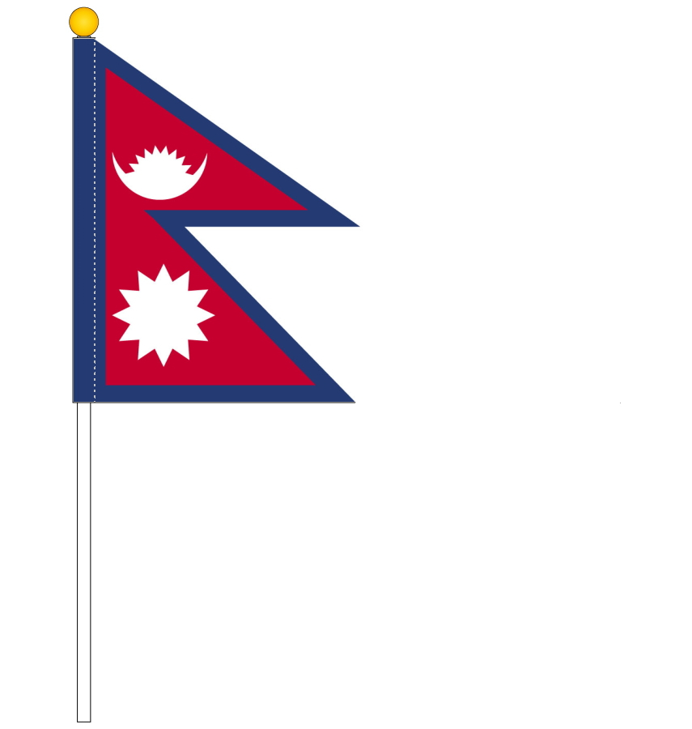
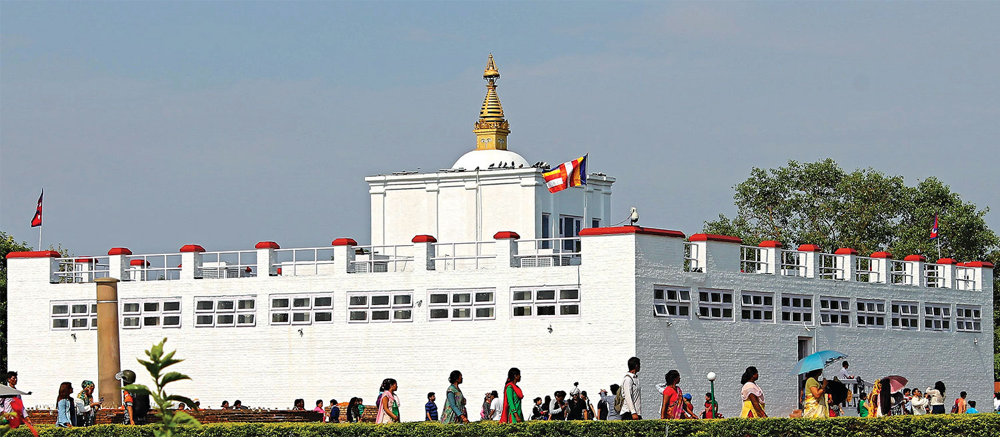
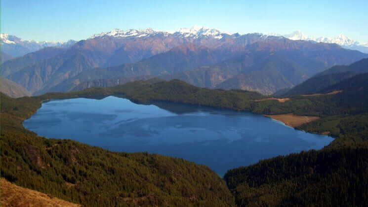
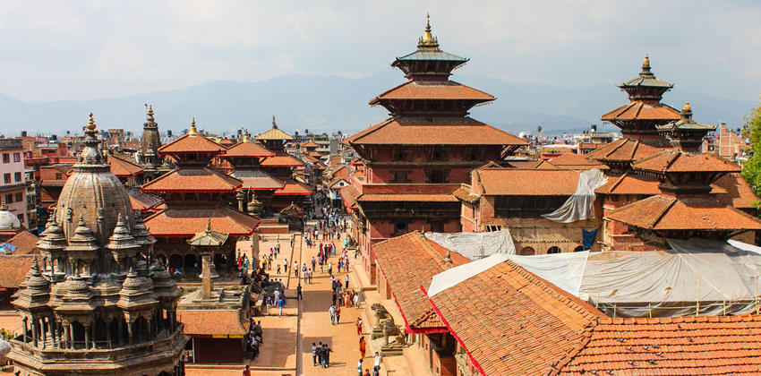
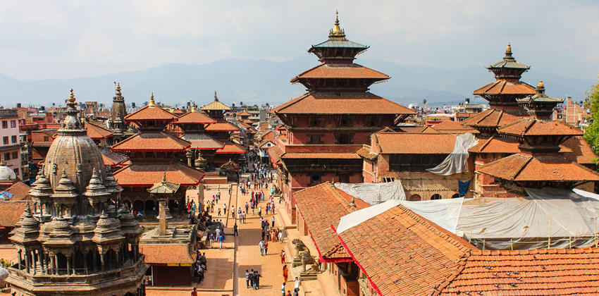

Nepal, a small beautiful country, One of the most beautiful countries in Asia. Nestled in the lap of the gigantic Himalayan Range, tiny land-locked Nepal has eight out of ten highest mountains in the world
Some Photos of Nepal National Flag,Lumbini,RaraLake,Swyambhu,Patan and Mustang
   
